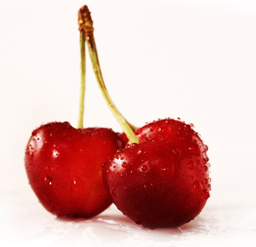

The Fruit is a Trap

If there’s one thing I learned from Pac-Man it’s that the fruit is a trap. You might think it’s a good idea to go after a couple juicy cherries, a strawberry, orange, or apple but nine times out of ten it’ll just end up getting you killed by ghosts. That’s why I never eat fruit. I won’t even drink fruit juice a.k.a. ghost blood.
As you may know, the act of biting into a fruit releases the trapped souls hidden inside. The more seeds the fruit has, the more ghosts will be released. I once bit into an apple and eight spectres were haunting me for weeks.
Research shows that fully seeded Watermelon is the most dangerous fruit. I heard about a guy who swallowed a watermelon seed and a baby ghost got into his gut. That think would scream and cry all day and all night from his insides. He lost his job, his wife, his house, even his mistress left him. A woman ate just one slice of watermelon and had the ghosts of 13 construction workers haunting here with their whistles and whoops every time she put on a skirt.
Even if fruit is left to rot, the ghosts can sometimes manifest as fruit flies. Nobody really knows how or why the ghosts get into the fruit. Many believe they are absorbed through the human remains left in the soil.
The only thing we know for sure is that the one fruit that is safe from haunting is the tomato. Even though those know-it-all scientists tell us the tomato is a fruit, nobody believes them, including ghosts.
P.S. Pretzels are a fruit.
Photo by alfieianni.com 
Comments